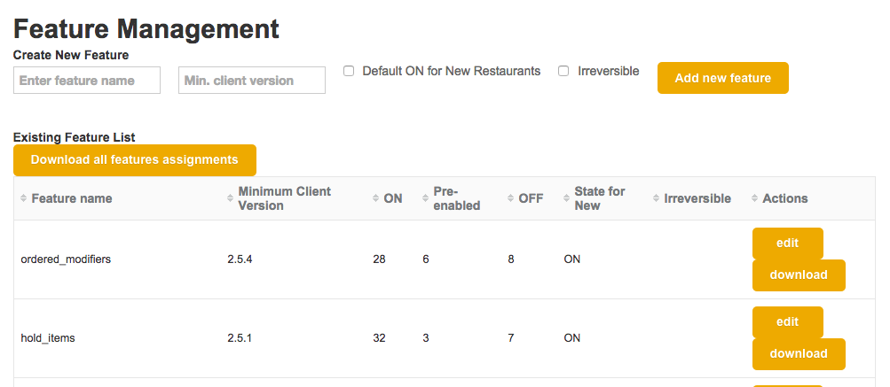
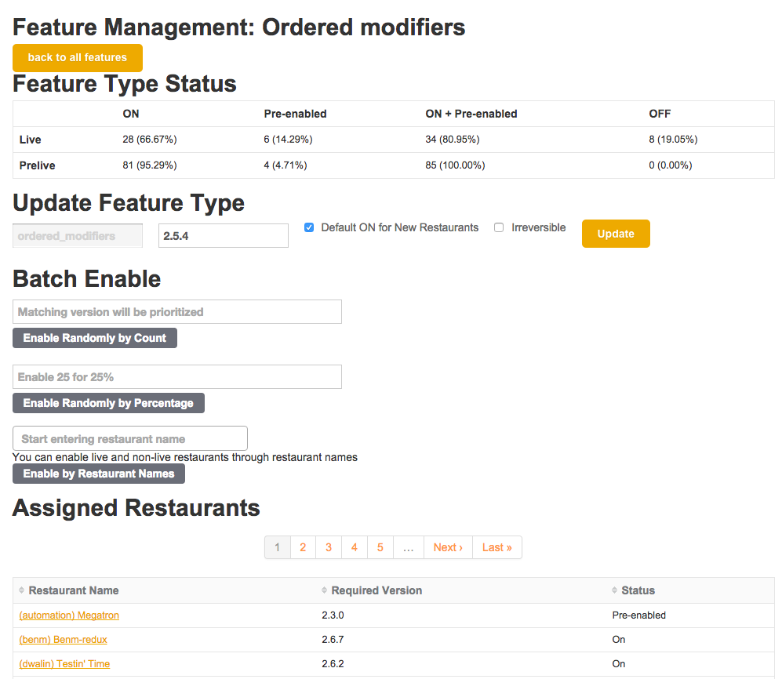

A thing that your thing (application) does, that users use, that is a coherent chunk of thing-ness
"If [some condition]... then let the user use this new functionality!" Otherwise... don't.
Not controlled by the user of the feature
"a technique in software development that attempts to provide an alternative to maintaining multiple sourcecode branches." https://en.wikipedia.org/wiki/Feature_toggle
gradual rollout (trusted partners first)
load testing (forgot an index?)
encourages implementation encapsulation
only for iOS versions that can handle the new behavior
server-side work-around for bugs in specific app versions
Rails backend
Merchant Point of Sale => 1-5(ish) iPads per restaurant/cafe/bar
$$$ per month per restaurant
many users (restaurant staff) for each restaurant.
"server-side work-around for bugs in specific app versions"
DST - iOS app reads PDT as PST? Just munge the data by 1 hour for that specific app version! (iOS fix = dev time + app approval wait)
$$ per feature
A/B testing i.e. experiments
features for internal users only (i.e. roles)
(feature) enablement vs (user) setting (the user configuring their usage of the feature)
MAJOR version when you make incompatible API changes
MINOR version when you add functionality in a backwards-compatible manner
PATCH version when you make backwards-compatible bug fixes
http://ruby-doc.org/stdlib-2.3.0/libdoc/rubygems/rdoc/Gem/Version.html
We MUST support anything that the restaurant does
Including forgetting/refusing to upgrade
Some features should be enabled as soon as the app is upgraded
Some should wait for rollout
Autorun the appropriate backfill on feature enablement! (.to_sym.eval(:run_on_enable!))
Features persist and have multiple configuration states
It’s not beautiful. The admin users love it. All of the power, none of the danger. 
before_destroy :ensure_feature_is_reversible
def ensure_feature_is_reversible
!feature_type.irreversible? # double negative
end

Features have attributes, which differ per restaurant
create_table :restaurants do |t|
t.string :client_version, null: false
# other important stuff, like name
end
create_table :features do |t|
t.timestamps
t.string :name, null: false
t.string :minimum_client_version, null: false
t.boolean :on_for_new_restaurants, null: false, default: false
t.boolean :reversible, null: false, default: false
end
create_table :restaurant_features do |t|
t.uuid :restaurant_id, null: false
t.uuid :feature_id, null: false
end
add_index :restaurant_features, [:feature_id]
add_index :restaurant_features, [:restaurant_id]
class Restaurant < ActiveRecord::Base
include Concerns::Restaurant::FeatureToggle
has_many :restaurant_features # in the real world this was polymorphic
validates :client_version, format: Semantic::Version::SemVerRegexp
end
module Concerns::Restaurant::FeatureToggle
extend ActiveSupport::Concern
included do
after_update :update_features, if: :required_version_changed?
end
def update_features
Feature.find_each do |feature_type|
feature = self.features.where(feature_type_id: feature_type.id).first_or_initialize
feature.update_status
feature.save! # in the real world, there is error handling here
end
end
def initiate_features
Feature.where(new_restaurants_on: true).find_each do |feature|
rfeature = restaurant_features.where(feature_id: feature.id).new
rfeature.initialize_enable
end
end
end
class Feature < ActiveRecord::Base
UNSAFE_FEATURES = ['place_holder', Features::BAD_FEATURE_2]
scope :safe_to_enable, -> { where "name not in (?)", UNSAFE_FEATURES }
has_many :restaurant_features, dependent: :destroy # important!!
after_update :update_feature_list, if: :minimum_client_version_changed?
def update_status
if enabled? && !has_sufficient_version?
pre_enable
elsif pre_enabled? && has_sufficient_version?
enable
end
end
def update_feature_list
features.includes(:feature_owner).find_each do |feature|
update_feature(feature)
end
end
end
Autorun the appropriate backfill on feature enablement
module FeatureManager
class MultipleRoles < FeatureManager::Base
def run_before_enable
@restaurant_feature.restaurant.users.each do |user|
next if user.roles.count > 0
UserRole.create! { user: user, role: user.role, foo: user.foo }
end
end
end
end
Moving to more granular roles? # has_one => has_many
You can never go back (without losing permissions data)
Requirements evolve! Use evolutionary design. The first thing is rarely the right thing.
Quick, get rid of the "Off" button!
How do you migrate features between feature toggle systems? How do you test the migration? Backfills and intermediate comparison formats! (CSV)
???
(unknown unknowns)
Thanks, Breadcrumb team!!
compwron.github.io/presentations/feature_feature/index.html
compwron.github.io/2015/12/10/features-of-features-with-rails
martinfowler.com/bliki/FeatureToggle.html
martinfowler.com/articles/feature-toggles.html
github.com/compwron/feature_feature
AMA => twitter.com/compiledwrong